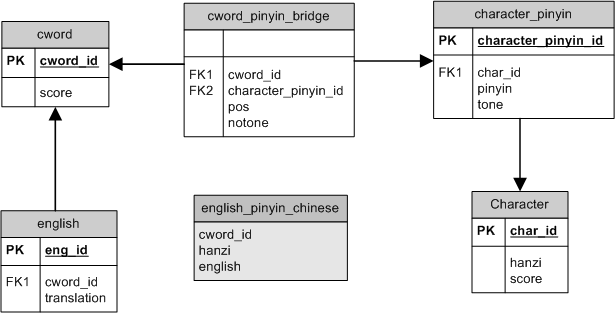

Hanzi Trainer - Internals
The database
I wanted a database system that would fulfill some requirements :
-
Can store all information about the vocabulary I study
-
Can possibly be extended to store more information...
-
Can be flexible enough so that different tests can query different parts of the database
-
Can fit the weirdness of the Chinese language (same character, different pronunciations; one character, a lot of different words; one chinese word, multiple interpretations....
Here is a representation of the design I put together :

The classes
Panels
Each different panels in the application is a different class.
DB System
HanziDB is a master class that defines the database structure exposed above (without the scores).
From this one, other database systems inherits this structure and can add more functionalities or expose different capabilities.
The HanziDBscore is the one currently used by the application to store the user content and keep track of the scores.
Currently in development is the CedictDB which will also use the same infrastructure, but get the data from the CEDICT database.
It is possible to have more inherited class for data coming for other places (internet, other open databases, import from other programs...etc...).